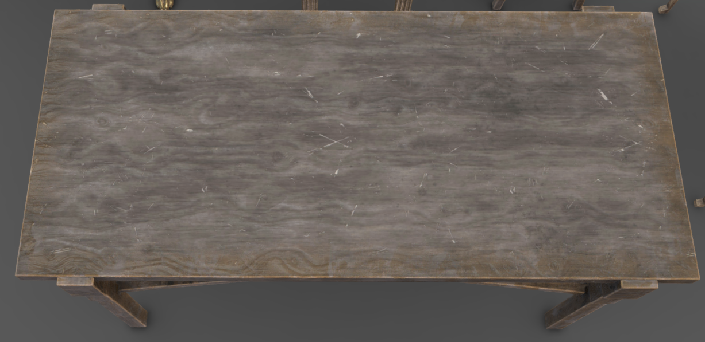
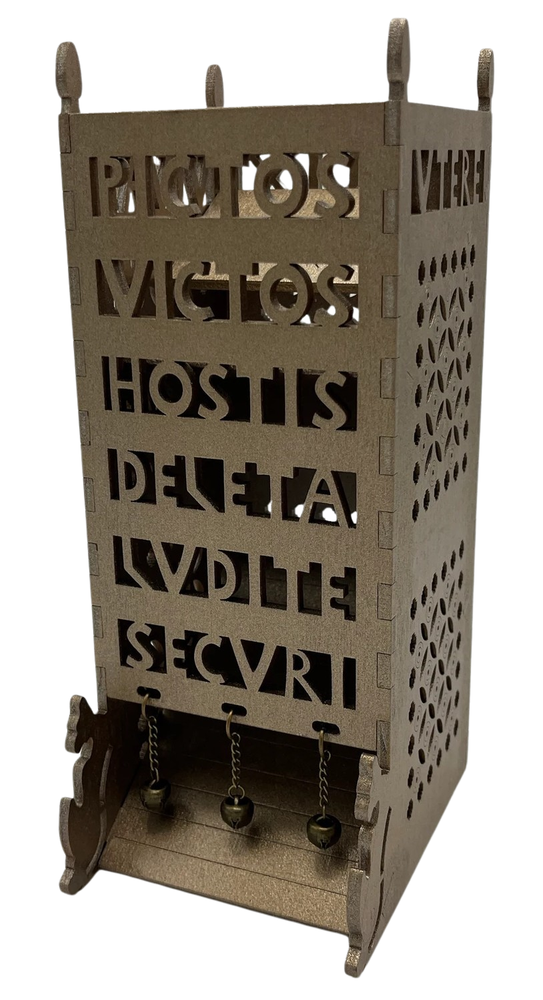

Dobbelsteen Toren
Laat vijf 3D dobbelstenen zweven, geef ze een spin en laat ze daarna door de toren rollen.


Laat vijf 3D dobbelstenen zweven, geef ze een spin en laat ze daarna door de toren rollen.

